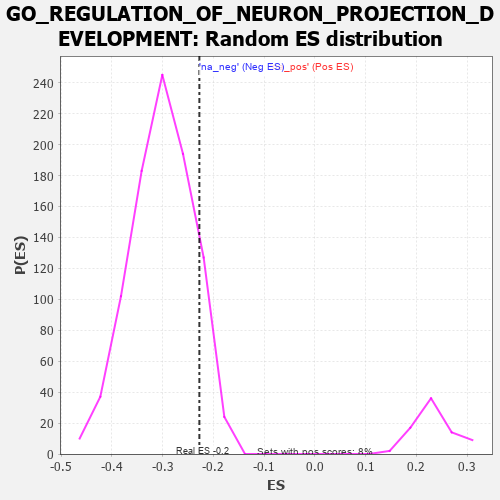

| | | Dataset | 7d |
| Phenotype | NoPhenotypeAvailable |
| Upregulated in class | na_neg |
| GeneSet | GO_REGULATION_OF_NEURON_PROJECTION_DEVELOPMENT |
| Enrichment Score (ES) | -0.2278078 |
| Normalized Enrichment Score (NES) | -0.7557212 |
| Nominal p-value | 0.88611716 |
| FDR q-value | 0.99672806 |
| FWER p-Value | 1.0 |
Table: GSEA Results Summary
 Fig 1: Enrichment plot: GO_REGULATION_OF_NEURON_PROJECTION_DEVELOPMENT
Fig 1: Enrichment plot: GO_REGULATION_OF_NEURON_PROJECTION_DEVELOPMENT
Profile of the Running ES Score & Positions of GeneSet Members on the Rank Ordered List
| PROBE | GENE SYMBOL | GENE_TITLE | RANK IN GENE LIST | RANK METRIC SCORE | RUNNING ES | CORE ENRICHMENT | | 1 | SYT2 | | | 8 | 5.577 | 0.0979 | No |
| 2 | HGF | | | 276 | 0.870 | 0.0794 | No |
| 3 | SHOX2 | | | 288 | 0.842 | 0.0929 | No |
| 4 | GSK3A | | | 351 | 0.745 | 0.0982 | No |
| 5 | RRN3 | | | 438 | 0.667 | 0.0991 | No |
| 6 | LRP1 | | | 470 | 0.648 | 0.1067 | No |
| 7 | CDC20 | | | 480 | 0.644 | 0.1169 | No |
| 8 | SRF | | | 542 | 0.615 | 0.1201 | No |
| 9 | DDX56 | | | 584 | 0.600 | 0.1255 | No |
| 10 | FBXW8 | | | 601 | 0.594 | 0.1340 | No |
| 11 | ID1 | | | 719 | 0.555 | 0.1289 | No |
| 12 | SF3A2 | | | 928 | 0.500 | 0.1113 | No |
| 13 | DVL3 | | | 971 | 0.490 | 0.1146 | No |
| 14 | AKT1 | | | 1040 | 0.476 | 0.1144 | No |
| 15 | MEF2C | | | 1054 | 0.473 | 0.1212 | No |
| 16 | WDR36 | | | 1260 | 0.437 | 0.1028 | No |
| 17 | FKBP4 | | | 1390 | 0.412 | 0.0937 | No |
| 18 | CARM1 | | | 1413 | 0.408 | 0.0981 | No |
| 19 | IFRD1 | | | 1486 | 0.392 | 0.0959 | No |
| 20 | FZD1 | | | 1574 | 0.379 | 0.0915 | No |
| 21 | RNF6 | | | 1605 | 0.373 | 0.0943 | No |
| 22 | TRAK1 | | | 1714 | 0.354 | 0.0868 | No |
| 23 | LLPH | | | 1768 | 0.343 | 0.0862 | No |
| 24 | THOC2 | | | 1796 | 0.338 | 0.0887 | No |
| 25 | FMR1 | | | 1816 | 0.334 | 0.0922 | No |
| 26 | PAK3 | | | 1889 | 0.322 | 0.0888 | No |
| 27 | BRSK2 | | | 1979 | 0.308 | 0.0829 | No |
| 28 | ROR1 | | | 1993 | 0.306 | 0.0866 | No |
| 29 | LRRC7 | | | 2080 | 0.294 | 0.0809 | No |
| 30 | BMP7 | | | 2107 | 0.290 | 0.0827 | No |
| 31 | ISLR2 | | | 2124 | 0.287 | 0.0858 | No |
| 32 | MYLIP | | | 2225 | 0.272 | 0.0779 | No |
| 33 | SIN3A | | | 2361 | 0.251 | 0.0651 | No |
| 34 | KDM1A | | | 2447 | 0.237 | 0.0585 | No |
| 35 | DSCAM | | | 2689 | 0.200 | 0.0313 | No |
| 36 | SLIT2 | | | 2724 | 0.195 | 0.0305 | No |
| 37 | NR2E1 | | | 2844 | 0.177 | 0.0184 | No |
| 38 | RAB17 | | | 2950 | 0.157 | 0.0079 | No |
| 39 | ULK4 | | | 3022 | 0.146 | 0.0014 | No |
| 40 | FEZ1 | | | 3055 | 0.142 | -0.0001 | No |
| 41 | MAP2 | | | 3074 | 0.140 | 0.0000 | No |
| 42 | TWF1 | | | 3199 | 0.123 | -0.0136 | No |
| 43 | KIF1A | | | 3415 | 0.088 | -0.0394 | No |
| 44 | SARM1 | | | 3432 | 0.086 | -0.0399 | No |
| 45 | CDK5 | | | 3480 | 0.080 | -0.0445 | No |
| 46 | FES | | | 3501 | 0.077 | -0.0457 | No |
| 47 | PQBP1 | | | 3526 | 0.072 | -0.0474 | No |
| 48 | STK25 | | | 3602 | 0.059 | -0.0559 | No |
| 49 | SFRP2 | | | 4065 | -0.018 | -0.1145 | No |
| 50 | ROBO2 | | | 4066 | -0.018 | -0.1142 | No |
| 51 | MTOR | | | 4114 | -0.025 | -0.1197 | No |
| 52 | ABL1 | | | 4125 | -0.027 | -0.1205 | No |
| 53 | CRK | | | 4139 | -0.031 | -0.1216 | No |
| 54 | GFI1 | | | 4168 | -0.037 | -0.1245 | No |
| 55 | GAK | | | 4249 | -0.050 | -0.1338 | No |
| 56 | SYT17 | | | 4310 | -0.061 | -0.1404 | No |
| 57 | OPA1 | | | 4330 | -0.065 | -0.1417 | No |
| 58 | FIG4 | | | 4348 | -0.068 | -0.1426 | No |
| 59 | LRRK2 | | | 4467 | -0.087 | -0.1561 | No |
| 60 | MOB2 | | | 4504 | -0.095 | -0.1590 | No |
| 61 | ILK | | | 4510 | -0.096 | -0.1579 | No |
| 62 | NPTN | | | 4519 | -0.098 | -0.1572 | No |
| 63 | NTRK2 | | | 4543 | -0.104 | -0.1583 | No |
| 64 | ABI2 | | | 4554 | -0.106 | -0.1577 | No |
| 65 | SYT4 | | | 4590 | -0.116 | -0.1601 | No |
| 66 | GATA3 | | | 4614 | -0.120 | -0.1609 | No |
| 67 | DLG5 | | | 4619 | -0.121 | -0.1592 | No |
| 68 | RAB21 | | | 4620 | -0.122 | -0.1571 | No |
| 69 | SDK1 | | | 4627 | -0.124 | -0.1556 | No |
| 70 | LIMK1 | | | 4684 | -0.136 | -0.1604 | No |
| 71 | PTK7 | | | 4687 | -0.136 | -0.1582 | No |
| 72 | ARF6 | | | 4704 | -0.140 | -0.1578 | No |
| 73 | RTN4 | | | 4783 | -0.154 | -0.1650 | No |
| 74 | TNIK | | | 4804 | -0.158 | -0.1647 | No |
| 75 | MARK2 | | | 4899 | -0.177 | -0.1735 | No |
| 76 | FZD4 | | | 4940 | -0.186 | -0.1753 | No |
| 77 | EP300 | | | 4941 | -0.186 | -0.1720 | No |
| 78 | KLF4 | | | 5005 | -0.198 | -0.1765 | No |
| 79 | ITSN1 | | | 5094 | -0.222 | -0.1838 | No |
| 80 | PTEN | | | 5262 | -0.261 | -0.2004 | No |
| 81 | RIMS2 | | | 5272 | -0.265 | -0.1969 | No |
| 82 | EPHA4 | | | 5273 | -0.265 | -0.1922 | No |
| 83 | MAGI2 | | | 5295 | -0.269 | -0.1901 | No |
| 84 | CPNE9 | | | 5374 | -0.289 | -0.1949 | No |
| 85 | GRIN1 | | | 5381 | -0.291 | -0.1905 | No |
| 86 | DLG4 | | | 5388 | -0.293 | -0.1861 | No |
| 87 | CUX1 | | | 5437 | -0.304 | -0.1868 | No |
| 88 | IST1 | | | 5442 | -0.305 | -0.1819 | No |
| 89 | LRIG2 | | | 5460 | -0.310 | -0.1786 | No |
| 90 | FGFR1 | | | 5543 | -0.332 | -0.1831 | No |
| 91 | ROR2 | | | 5626 | -0.353 | -0.1873 | No |
| 92 | VAMP7 | | | 5777 | -0.399 | -0.1993 | No |
| 93 | TRPC6 | | | 5784 | -0.401 | -0.1930 | No |
| 94 | VLDLR | | | 5898 | -0.434 | -0.1997 | No |
| 95 | STK11 | | | 5922 | -0.443 | -0.1948 | No |
| 96 | DBNL | | | 6084 | -0.501 | -0.2064 | No |
| 97 | FEZF2 | | | 6150 | -0.519 | -0.2055 | No |
| 98 | GRID2 | | | 6170 | -0.528 | -0.1985 | No |
| 99 | CDKL3 | | | 6401 | -0.618 | -0.2168 | Yes |
| 100 | PTPRD | | | 6423 | -0.629 | -0.2084 | Yes |
| 101 | TRPV4 | | | 6515 | -0.668 | -0.2081 | Yes |
| 102 | KANK1 | | | 6536 | -0.678 | -0.1986 | Yes |
| 103 | STK24 | | | 6550 | -0.684 | -0.1881 | Yes |
| 104 | ROBO1 | | | 6577 | -0.699 | -0.1790 | Yes |
| 105 | ARF1 | | | 6583 | -0.701 | -0.1672 | Yes |
| 106 | PTPRS | | | 6646 | -0.738 | -0.1620 | Yes |
| 107 | CERS2 | | | 6689 | -0.756 | -0.1540 | Yes |
| 108 | PAK1 | | | 6691 | -0.757 | -0.1407 | Yes |
| 109 | GSK3B | | | 6719 | -0.768 | -0.1305 | Yes |
| 110 | PAQR3 | | | 6812 | -0.819 | -0.1277 | Yes |
| 111 | PTPRF | | | 6908 | -0.872 | -0.1243 | Yes |
| 112 | LRP8 | | | 6931 | -0.889 | -0.1113 | Yes |
| 113 | SNX3 | | | 6934 | -0.893 | -0.0957 | Yes |
| 114 | DNM1L | | | 6963 | -0.913 | -0.0831 | Yes |
| 115 | CPNE5 | | | 7070 | -0.977 | -0.0793 | Yes |
| 116 | RYK | | | 7102 | -1.000 | -0.0655 | Yes |
| 117 | SYT1 | | | 7148 | -1.033 | -0.0529 | Yes |
| 118 | CIB1 | | | 7280 | -1.152 | -0.0491 | Yes |
| 119 | GRN | | | 7319 | -1.194 | -0.0328 | Yes |
| 120 | EFHC2 | | | 7326 | -1.199 | -0.0123 | Yes |
| 121 | NGEF | | | 7335 | -1.209 | 0.0082 | Yes |
| 122 | DCC | | | 7550 | -1.470 | 0.0070 | Yes |
| 123 | FYN | | | 7881 | -2.622 | 0.0115 | Yes |
Table: GSEA details [plain text format]

Fig 2: GO_REGULATION_OF_NEURON_PROJECTION_DEVELOPMENT: Random ES distribution
Gene set null distribution of ES for GO_REGULATION_OF_NEURON_PROJECTION_DEVELOPMENT